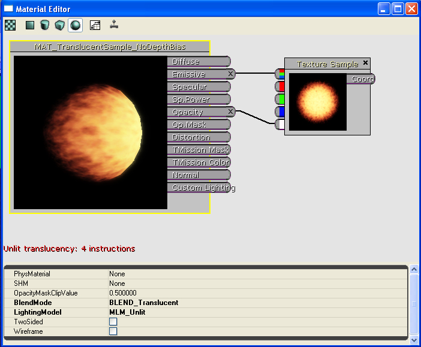
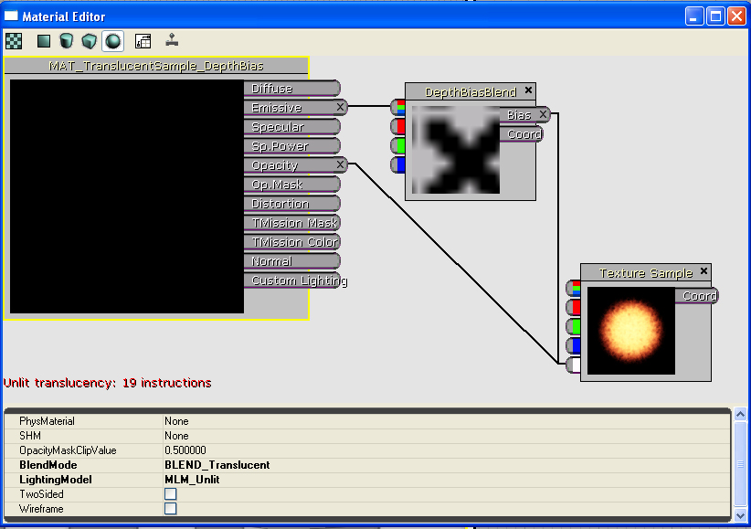

UDN
Search public documentation:
DepthBiasBlendUsage
日本語訳
中国翻译
한국어
Interested in the Unreal Engine?
Visit the Unreal Technology site.
Looking for jobs and company info?
Check out the Epic games site.
Questions about support via UDN?
Contact the UDN Staff
中国翻译
한국어
Interested in the Unreal Engine?
Visit the Unreal Technology site.
Looking for jobs and company info?
Check out the Epic games site.
Questions about support via UDN?
Contact the UDN Staff
UE3 Home > Materials & Textures > The Depth Bias Blending Material Expression
The Depth Bias Blending Material Expression
Overview
if (DestinationDepth < SourceDepth)
{
FinalColor = DestinationColor; // Do not draw the source pixel
}
else
if (SourceDepth < (DestinationDepth - ((1 - Bias) * BiasScale)))
{
FinalColor = SourceColor; // Draw the source pixel
}
else
{
FinalColor = LinearInterpolation(DestinationColor, SourceColor,
((DestinationDepth - Source Depth) / ((1 - Bias) * BiasScale)));
}
The most obvious usage of this type of blending is to eliminate the harsh edges that occur when sprite particles intersect geometry. We will use this situation to provide a demonstration for the DepthBiasBlend expression.
Example
The Source Image and Emitter
The emitter will burst a single particle every five seconds with a lifetime of 4.5 seconds. The emitter actor is positioned in the level such that the particles will rise through the `floor' of the level. The particles utilize the following texture: Figure 1: The source texture used. (The alpha of the image is on the right.)The Problem Example
The simple material that would be applied to the particle sprites would be the following:  Figure 2: The `standard' sprite material The particle system looks good with this applied in the Cascade viewport. However, when the emitter is placed in the level, there is a problem. The particles generate hard edges whenever the penetrate geometry in the level. The results are as shown below: Figure 3: The standard particle/geometry intersection - Shot 1 Figure 4: The standard particle/geometry intersection - Shot 2 Figure 5: The standard particle/geometry intersection - Shot 3 Note the harsh edges that show up when the sprite is penetrating the level geometry.The New Method
The new material that can be applied to the particle sprites utilizes the DepthBiasBlend expression and is shown below:  Figure 6: The DepthBiasBlend-based material The DepthBiasBlend is derived from the TextureSample expression, so a source texture is set simply by selecting a texture in the Generic Browser, right-clicking the expression, and selecting "Use Current Texture". The Coord input is the standard Texture Coordinate option. For the case of particles, this should be left `empty' so that the first UV set is utilized. The Bias input provides the source pixel bias - the value plugged into the equation above to allow for a `blending' transition to occur as objects penetrate. It can be any expression combination that results in a single floating point value. In this case, the alpha channel of the source image is used. This means that at each pixel, the source texture will have the alpha value sampled and will utilize it as the bias. The BiasScale parameter of the DepthBiasBlend expression allows for scaling the bias to give finer control over the effect. In this case, the bias scale is set relatively high (200.0) to demonstrate the effect more clearly. The BlendMode of the material must be translucent, even if the texture were opaque. (NOTE: This may change in the future, but is the case as of the authoring of this document.) This is to guarantee the object using the material is rendered at a time where the destination buffer has the values it will blend with. In the case of wanting to blend an opaque texture, set the BlendMode to Translucent and feed a Constant expression of 1.0 into the opacity channel. [IMPORTANT NOTE: Currently, this expression will not show up in the thumbnail rendering or the preview window. This is due to the way clears occur at the moment. It is a known issue and is in the database.] The new material is applied to the emitter with the following results: Figure 7: The new particle/geometry intersection - Shot 1 Figure 8: The new particle/geometry intersection - Shot 2 Figure 8: The new particle/geometry intersection - Shot 3 The screen shot below shows a side-by-side comparison of the two versions of the emitter: Figure 9: Side-by-side comparisonUSAGE NOTES:
- The material expression for DepthBiasBlend is not cheap. It takes 15 additional instructions at the moment - be sure to take this into account when creating material which utilize it!IMPORTANT UPDATE
 Figure 11: Translucent DepthBiasedBlend Material
Figure 11: Translucent DepthBiasedBlend Material